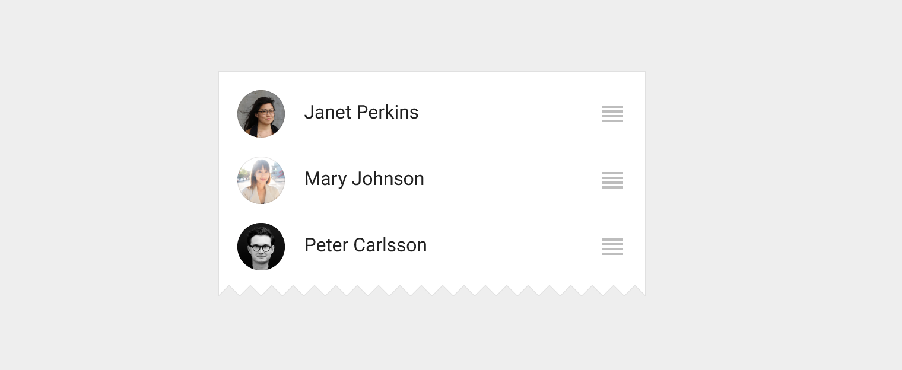
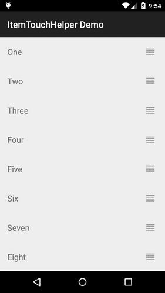
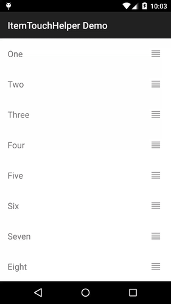
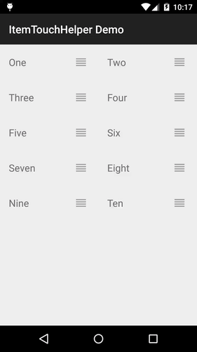

原文：Drag and Swipe with RecyclerView Part Two: Handles, Grids, and Custom Animations
翻译：http://www.jcodecraeer.com/a/anzhuokaifa/androidkaifa/2015/0724/3219.html by 泡在网上的日子
在第一部分，我们介绍了ItemTouchHelper，以及ItemTouchHelper.Callback 的实现，在线性列表（RecyclerView）中添加基本的拖拽&拖放与滑动删除。本文将在前文例子的基础上扩展，增加对grid布局的支持，处理拖拽的初始化，提示被选中的view，同时自定义滑动的动画。

拖块
当设计一个支持拖拽与拖放的列表的时候，通常都会包含一个提示可以触摸拖动的东西。它对于用户发现此功能与软件的易用性都是有帮助的，并且Material指南也推荐 在列表处于“编辑模式”的时候这样做。让我们的例子包含一个这样的滑块也相当简单。

首先，修改item的布局（item_main.xml）
1 2 3 4 5 6 7 8 9 10 11 12 13 14 15 16 17 18 19 20 21 22 23 24 25
| <?xml version="1.0" encoding="utf-8"?> <FrameLayout xmlns:android="http://schemas.android.com/apk/res/android" android:id="@+id/item" android:layout_width="match_parent" android:layout_height="?listPreferredItemHeight" android:clickable="true" android:focusable="true" android:foreground="?selectableItemBackground"> <TextView android:id="@+id/text" android:layout_width="wrap_content" android:layout_height="wrap_content" android:layout_gravity="center_vertical" android:layout_marginLeft="16dp" android:textAppearance="?android:attr/textAppearanceMedium" /> <ImageView android:id="@+id/handle" android:layout_width="?listPreferredItemHeight" android:layout_height="match_parent" android:layout_gravity="center_vertical|right" android:scaleType="center" android:src="@drawable/ic_reorder_grey_500_24dp" /> </FrameLayout>
|
用于拖拽的图标可以在Material Design Icons里面找到，使用Android Material Design 图标生成插件来添加。
就如上篇文章简要提到的，你可以使用ItemTouchHelper.startDrag(ViewHolder) 开始一个拖拽。因此我们需要更改ViewHolder，让它包含这个拖拽图标，同时设置一个简单的触摸事件 listener来触发startDrag()的调用。
我们需要一个传递event up 的interface：
1 2 3 4 5 6 7 8 9
| public interface OnStartDragListener { /** * Called when a view is requesting a start of a drag. * * @param viewHolder The holder of the view to drag. */ void onStartDrag(RecyclerView.ViewHolder viewHolder); }
|
然后，在ItemViewHolder中初始化拖拽图标的视图：
1 2 3 4 5 6
| public final ImageView handleView; public ItemViewHolder(View itemView) { super(itemView); handleView = (ImageView) itemView.findViewById(R.id.handle); }
|
并且更新RecyclerListAdapter：
1 2 3 4 5 6 7 8 9 10 11 12 13 14 15 16 17 18 19 20
| private final OnStartDragListener mDragStartListener; public RecyclerListAdapter(OnStartDragListener dragStartListener) { mDragStartListener = dragStartListener; } @Override public void onBindViewHolder(final ItemViewHolder holder, int position) { @Override public boolean onTouch(View v, MotionEvent event) { if (MotionEventCompat.getActionMasked(event) == MotionEvent.ACTION_DOWN) { mDragStartListener.onStartDrag(holder); } return false; } }); }
|
现在完整的RecyclerListAdapter类是这样的。
剩下的事情就是在Fragment中添加OnStartDragListener：
1 2 3 4 5 6 7 8 9 10 11 12 13 14
| public class RecyclerListFragment extends Fragment implements OnStartDragListener { public void onViewCreated(View view, Bundle icicle) { super.onViewCreated(view, icicle); RecyclerListAdapter a = new RecyclerListAdapter(this); } @Override public void onStartDrag(RecyclerView.ViewHolder viewHolder) { mItemTouchHelper.startDrag(viewHolder); } }
|
完整的RecyclerListFragment类现在是这样的。现在运行一下，你应该可以通过触摸这个拖拽图标来开始拖拽操作了

提示被选中的View
在我们上面描述的基础案例中，没有在视觉上暗示被拖拽的item被选中了。显然，这不是被期望的，不过这也很好解决。实际上，在ItemTouchHelper的帮助下，只要你的View Holder item 设置了背景，这种效果自然就可以得到。在Lollipop或者更高版本，Item 的深度（elevation）在拖拽和滑动期间会上升；在早起版本，滑动的时候是简单的淡化（fade）效果。
要在我们现有的例子中看到这种效果，只需添加一个背景到item_main.xml的根FrameLayout，或者在RecyclerListAdapter.ItemViewHolder的构造函数中设置一个。效果如下：

看起来不错，但是我们希望得到更多的控制。其中一种办法就是在它被选择或者被清除的时候让你的View Holder去处理这些变化。为此，可以使用ItemTouchHelper.Callback提供的两个回调方法。
- onSelectedChanged(ViewHolder, int): 在每次View Holder的状态变成拖拽 (ACTION_STATE_DRAG) 或者 滑动 (ACTION_STATE_SWIPE)的时候被调用。这是把你的item view变成激活状态的最佳地点。
- clearView(RecyclerView, ViewHolder) 在一个view被拖拽然后被放开的时候被调用，同时也会在滑动被取消或者完成ACTION_STATE_IDLE)的时候被调用。这里是恢复item view idle状态的典型地方。
我们只需要把这些东西结合在一起就行了。
首先，为View Holder创建一个interface：
1 2 3 4 5 6 7 8 9 10 11 12 13 14 15 16 17 18 19 20 21
| /** * Notifies a View Holder of relevant callbacks from * {@link ItemTouchHelper.Callback}. */ public interface ItemTouchHelperViewHolder { /** * Called when the {@link ItemTouchHelper} first registers an * item as being moved or swiped. * Implementations should update the item view to indicate * it's active state. */ void onItemSelected(); /** * Called when the {@link ItemTouchHelper} has completed the * move or swipe, and the active item state should be cleared. */ void onItemClear(); }
|
然后，让SimpleItemTouchHelperCallback触发各自的回调：
1 2 3 4 5 6 7 8 9 10 11 12 13 14 15 16 17 18 19 20 21 22 23 24 25
| @Override public void onSelectedChanged(RecyclerView.ViewHolder viewHolder, int actionState) { if (actionState != ItemTouchHelper.ACTION_STATE_IDLE) { if (viewHolder instanceof ItemTouchHelperViewHolder) { ItemTouchHelperViewHolder itemViewHolder = (ItemTouchHelperViewHolder) viewHolder; itemViewHolder.onItemSelected(); } } super.onSelectedChanged(viewHolder, actionState); } @Override public void clearView(RecyclerView recyclerView, RecyclerView.ViewHolder viewHolder) { super.clearView(recyclerView, viewHolder); if (viewHolder instanceof ItemTouchHelperViewHolder) { ItemTouchHelperViewHolder itemViewHolder = (ItemTouchHelperViewHolder) viewHolder; itemViewHolder.onItemClear(); } }
|
现在剩下的事情就是让RecyclerListAdapter.ItemViewHolder实现ItemTouchHelperViewHolder:
1 2 3 4 5 6 7 8 9 10 11 12 13
| public class ItemViewHolder extends RecyclerView.ViewHolder implements ItemTouchHelperViewHolder { public void onItemSelected() { itemView.setBackgroundColor(Color.LTGRAY); } @Override public void onItemClear() { itemView.setBackgroundColor(0); } }
|
在本例子中，我们简单的在item激活的时候添加了一个灰色背景，在被清除的时候移除了这个灰色背景。如果你的ItemTouchHelper和Adapter是在一起的，你可以
不这样设置，直接在 ItemTouchHelper.Callback中切换view的状态。
Grid 布局
如果你想用GridLayoutManager来修改这个项目，你会发现不能正常工作。原因和解决办法都很简单：我们必须告诉ItemTouchHelper我们想支持向左拖动和向右拖动。在SimpleItemTouchHelperCallback中，我们已经指明了：
1 2 3 4 5 6 7
| @Override public int getMovementFlags(RecyclerView recyclerView, RecyclerView.ViewHolder viewHolder) { int dragFlags = ItemTouchHelper.UP | ItemTouchHelper.DOWN; int swipeFlags = ItemTouchHelper.START | ItemTouchHelper.END; return makeMovementFlags(dragFlags, swipeFlags); }
|
要支持grid布局，唯一需要的修改是向dragFlags中添加left和 right方向。
1 2
| int dragFlags = ItemTouchHelper.UP | ItemTouchHelper.DOWN | ItemTouchHelper.LEFT | ItemTouchHelper.RIGHT;
|
但是，对于grid而言，滑动删除不是非常自然的设计，因此你可能需要这样来去掉此功能：
1 2 3 4 5 6 7 8
| @Override public int getMovementFlags(RecyclerView recyclerView, RecyclerView.ViewHolder viewHolder) { int dragFlags = ItemTouchHelper.UP | ItemTouchHelper.DOWN | ItemTouchHelper.LEFT | ItemTouchHelper.RIGHT; int swipeFlags = 0; return makeMovementFlags(dragFlags, swipeFlags); }
|
可以查看 RecyclerGridFragment 来了解GridLayoutManager的例子。下面是运行效果：

自定义滑动动画
ItemTouchHelper.Callback 提供了非常方便的方法来控制拖拽和滑动期间的view动画。因为ItemTouchHelper其实是一个RecyclerView.ItemDecoration，我可以
用同样的方式进行view的绘制。
在后面的部分，我们将更深入的讨论这个问题，但是这里也给出一个简单的例子，重写默认的滑动动画，显示线性淡化效果。
1 2 3 4 5 6 7 8 9 10 11 12 13 14 15
| @Override public void onChildDraw(Canvas c, RecyclerView recyclerView, ViewHolder viewHolder, float dX, float dY, int actionState, boolean isCurrentlyActive) { if (actionState == ItemTouchHelper.ACTION_STATE_SWIPE) { float width = (float) viewHolder.itemView.getWidth(); float alpha = 1.0f - Math.abs(dX) / width; viewHolder.itemView.setAlpha(alpha); viewHolder.itemView.setTranslationX(dX); } else { super.onChildDraw(c, recyclerView, viewHolder, dX, dY, actionState, isCurrentlyActive); } }
|
dX 与 dY参数代表目前被选择view 的移动距离，其中：
- -1.0f is a full ItemTouchHelper.END to ItemTouchHelper.STARTswipe
- 1.0f is a full ItemTouchHelper.START to ItemTouchHelper.END swipe
为了不漏掉我们没有处理的actionState，记住务必调用super方法，这样其他的默认动画才会运行。
接下来的部分我们将讲解如何控制拖拽时候的绘制。
结束语
我们刚刚谈到了通过自定义ItemTouchHelper所能做的事情，这部分比较有趣。我也希望能在这部分中讲更多内容，但是考虑到文章的长度，我决定分开来写。第三部分会很快出来。
GitHub项目比我们的文章先更新，如果你不想看教程，直接看代码上的变化也行。
源码
这个系列文章包含相应GitHub项目，Android-ItemTouchHelper-Demo。这部分提交的代码是从f8f149 到 d164fba。